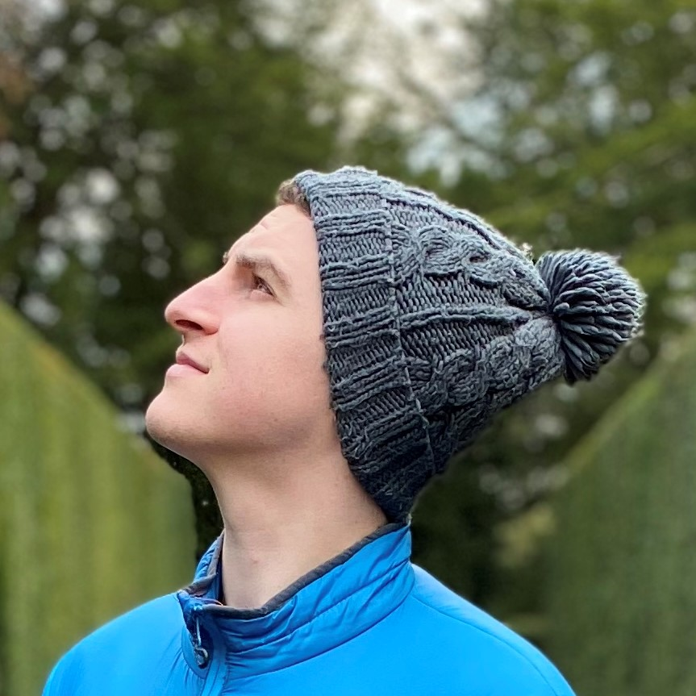

Michael Ballard
Senior Full Stack Engineer

A senior front end developer with expertise in React and NextJS, I have a passion for creating clean, responsive UI's for the modern web. I have experience leading a squad of developers and I am especially adept at migrating legacy codebases to NextJS, utilising the latest features of the framework to improve performance and developer experience. I've successfully led multiple large-scale migrations that reduced deployment times by 80% and improved team productivity through modern development practices and automated workflows.
Work Experience
Fullstack Developer
- Lead developer on an in-house affiliate marketing platform, architecting and building a full-stack solution using the SST framework with AWS infrastructure.
- Successfully migrated legacy codebase to NextJS 14, implementing modern development practices with TypeScript, Tailwind CSS, and Shadcn UI components.
- Integrated Stripe Connect payment processing and built comprehensive analytics dashboards for Commercial teams, enabling data-driven decision making and revenue tracking.
- Collaborated with the ads team to develop internal tooling for enhanced logging and monitoring, working with Apache Kafka and Node.js scripts to process and transform data for data lake ingestion.
- Established CI/CD pipelines and development workflows, improving code quality and deployment efficiency across multiple teams.
Senior Front End Developer
- Lead the migration of legacy frontend to NextJS. This involved running workshops to upskill developers in the framework and working with devops to ensure the infrastructure was in place to support the migration.
- Championed best practices by writing extensive documentation on everything from folder structure to writing components to CI/CD pipelines.
- Lead a squad of 4 developers ranging from junior through to senior. Responsibilities included running standups, writing jira tickets, communicating with head of engineering and product owner. I also worked closely with the junior developer to help them grow and learn new skills.
- Integrated with Contentful CMS to create pages that staff could change without needing to deploy code. This lead to a huge reduction in the number of tickets raised for content changes, especially from the legal team who could now alter privacy policy and T's & C's without developers helping.
- Worked closely with devops to integrate CI/CD pipelines, transitioning code deployments from several hour manual processes to fully automated git controlled deployments. A stand out feature was feature branch deployment, allowing testers and stakeholders to view changes in isolation without affecting other work.
Front End Developer
- Helped launch a MLP (Minimum Lovable Product) for an established hospitality agency branching out into the platform space.
- Worked with a team of front end and back end developers to fix bugs, update legacy code and add new features for clients and in house support teams.
- Worked with the design team to craft an in house design system and components library.
Front End Lead - Operational Intelligence
- Lead front end of in house development for applications used by network engineers and support teams within the UK business.
- Transformed the front end development stack of the team from traditional MVC to React, with a decoupled API backend.
- Created a reusable components library for the team to utilise in order to make development easier as well as getting a consitent look and feel across our web estate.
- Implemented new development tools in the team to enforce coding standards and detect bugs, reducing risk of errors and increasing quality of written code.
- Reduced manual effort by creating CI/CD pipelines for automated testing and deployment of code.
- Ran workshops with the wider organisation to demo our technology transformation, sharing best practices and learnings.
Graduate Techboost Project - winners
- Developed a React Native application to provide new starters with a smooth and user friendly onboarding experience.
- Ran workshops for my team to introduce them to mobile app development and React Native.
- Led development for the app and helped members of the team with issues they encountered.
- Took part in UX and UI workshops with senior developers in Vodafone to learn best practice and get feedback from professionals.
Graduate Solutions Engineer - IoT
- Developed IoT solutions for customers using JavaScript on our Invent platform.
- Integrated with 3rd party APIs to expand our IoT capability.
- Involvement in client workshops to understand requirements and interate projects in an agile manner.
- Ran workshops with the team to introduce them to various technologies such as React Native, Microsoft Flow and Python programming.
- Delivered a proof of concept using a React front end to integrate with the bespoke javascript engine that ran underneath the IoT platform, enabling IoT solutions to be built using React front ends. This resulted in the department dedicating more resources to front end development, and my React PoC is still being built on to this day.
Junior Developer
- My first professional experience of web and mobile app design.
- Developed a mobile app using the Ionic framework for customers to be able to manage their site content from their phone.
- Developed a PHP application to enable the marketting team to create mobile notifications for customers.
- Modernised a lot of legacy code. Most noteably AJAXified the CMS to enable dynamic content and less page redirects.
- Discovered React after a friend recommended I look into it, been using it ever since!